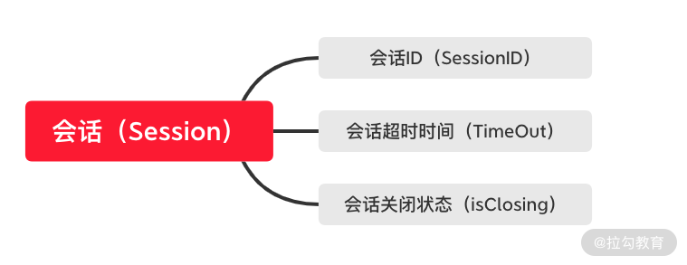
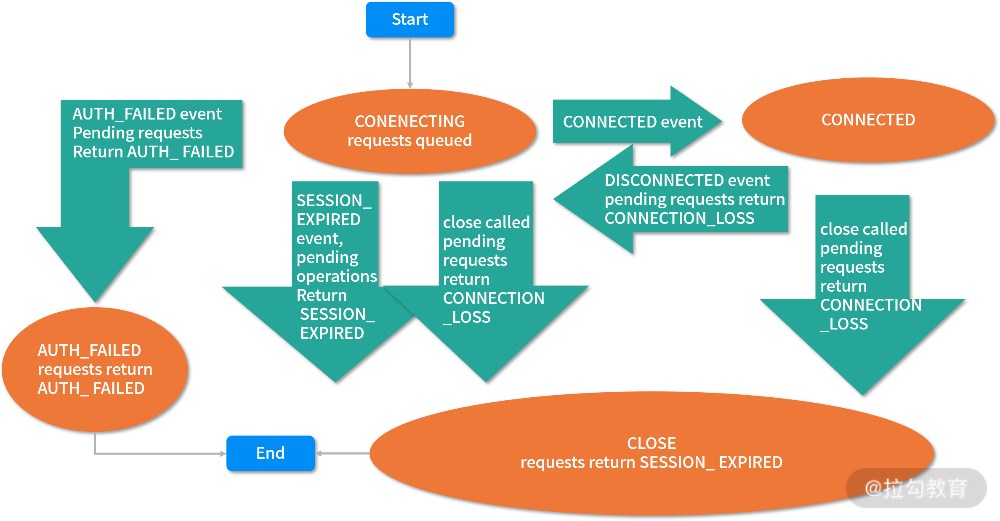

- 00 开篇词：选择 ZooKeeper，一步到位掌握分布式开发.md.html
- 01 ZooKeeper 数据模型：节点的特性与应用.md.html
- 02 发布订阅模式：如何使用 Watch 机制实现分布式通知.md.html
- 03 ACL 权限控制：如何避免未经授权的访问？.md.html
- 04 ZooKeeper 如何进行序列化？.md.html
- 05 深入分析 Jute 的底层实现原理.md.html
- 06 ZooKeeper 的网络通信协议详解.md.html
- 07 单机模式：服务器如何从初始化到对外提供服务？.md.html
- 08 集群模式：服务器如何从初始化到对外提供服务？.md.html
- 09 创建会话：避开日常开发的那些“坑”.md.html
- 10 ClientCnxn：客户端核心工作类工作原理解析.md.html
- 11 分桶策略：如何实现高效的会话管理？.md.html
- 12 服务端是如何处理一次会话请求的？.md.html
- 13 Curator：如何降低 ZooKeeper 使用的复杂性？.md.html
- 14 Leader 选举：如何保证分布式数据的一致性？.md.html
- 15 ZooKeeper 究竟是怎么选中 Leader 的？.md.html
- 16 ZooKeeper 集群中 Leader 与 Follower 的数据同步策略.md.html
- 17 集群中 Leader 的作用：事务的请求处理与调度分析.md.html
- 18 集群中 Follow 的作用：非事务请求的处理与 Leader 的选举分析.md.html
- 19 Observer 的作用与 Follow 有哪些不同？.md.html
- 20 一个运行中的 ZooKeeper 服务会产生哪些数据和文件？.md.html
- 21 ZooKeeper 分布式锁：实现和原理解析.md.html
- 22 基于 ZooKeeper 命名服务的应用：分布式 ID 生成器.md.html
- 23 使用 ZooKeeper 实现负载均衡服务器功能.md.html
- 24 ZooKeeper 在 Kafka 和 Dubbo 中的工业级实现案例分析.md.html
- 25 如何搭建一个高可用的 ZooKeeper 生产环境？.md.html
- 26 JConsole 与四字母命令：如何监控服务器上 ZooKeeper 的运行状态？.md.html
- 27 crontab 与 PurgeTxnLog：线上系统日志清理的最佳时间和方式.md.html
- 28 彻底掌握二阶段提交三阶段提交算法原理.md.html
- 29 ZAB 协议算法：崩溃恢复和消息广播.md.html
- 30 ZAB 与 Paxos 算法的联系与区别.md.html
- 31 ZooKeeper 中二阶段提交算法的实现分析.md.html
- 32 ZooKeeper 数据存储底层实现解析.md.html
- 33 结束语 分布技术发展与 ZooKeeper 应用前景.md.html
- 捐赠
09 创建会话：避开日常开发的那些“坑”
会话是 ZooKeeper 中最核心的概念之一。客户端与服务端的交互操作中都离不开会话的相关的操作。在前几节课中我们学到的临时节点、Watch 通知机制等都和客户端会话有密不可分的关系。比如一次会话关闭时，服务端会自动删除该会话所创建的临时节点，或者当客户端会话退出时，通过 Watch 监控机制就可以向订阅了该事件的客户端发送响应的通知。接下来我们就从会话的应用层使用，到 ZooKeeper 底层的实现原理，一步步学习会话的相关知识。
会话的创建
ZooKeeper 的工作方式一般是通过客户端向服务端发送请求而实现的。而在一个请求的发送过程中，首先，客户端要与服务端进行连接，而一个连接就是一个会话。在 ZooKeeper 中，一个会话可以看作是一个用于表示客户端与服务器端连接的数据结构 Session。而这个数据结构由三个部分组成：分别是会话 ID（sessionID）、会话超时时间（TimeOut）、会话关闭状态（isClosing），如下图所示。

下面我们来分别介绍一下这三个部分：
- 会话 ID：会话 ID 作为一个会话的标识符，当我们创建一次会话的时候，ZooKeeper 会自动为其分配一个唯一的 ID 编码。
- 会话超时时间：会话超时时间在我们之前的课程中也有涉及，一般来说，一个会话的超时时间就是指一次会话从发起后到被服务器关闭的时长。而设置会话超时时间后，服务器会参考设置的超时时间，最终计算一个服务端自己的超时时间。而这个超时时间则是最终真正用于 ZooKeeper 中服务端用户会话管理的超时时间。
- 会话关闭状态：会话关闭 isClosing 状态属性字段表示一个会话是否已经关闭。如果服务器检查到一个会话已经因为超时等原因失效时， ZooKeeper 会在该会话的 isClosing 属性值标记为关闭，再之后就不对该会话进行操作了。
会话状态
通过上面的学习，我们知道了 ZooKeeper 中一次会话的内部结构。下面我们就从系统运行的角度去分析，一次会话从创建到关闭的生命周期中都经历了哪些阶段。

上面是来自 ZooKeeper 官网的一张图片。该图片详细完整地描述了一次会话的完整生命周期。而通过该图片我们可以知道，在 ZooKeeper 服务的运行过程中，会话会经历不同的状态变化。而这些状态包括：正在连接（CONNECTING）、已经连接（CONNECTIED）、正在重新连接（RECONNECTING）、已经重新连接（RECONNECTED）、会话关闭（CLOSE）等。
当客户端开始创建一个与服务端的会话操作时，它的会话状态就会变成 CONNECTING，之后客户端会根据服务器地址列表中的服务器 IP 地址分别尝试进行连接。如果遇到一个 IP 地址可以连接到服务器，那么客户端会话状态将变为 CONNECTIED。
而如果因为网络原因造成已经连接的客户端会话断开时，客户端会重新尝试连接服务端。而对应的客户端会话状态又变成 CONNECTING ，直到该会话连接到服务端最终又变成 CONNECTIED。
在 ZooKeeper 服务的整个运行过程中，会话状态经常会在 CONNECTING 与 CONNECTIED 之间进行切换。最后，当出现超时或者客户端主动退出程序等情况时，客户端会话状态则会变为 CLOSE 状态。
会话底层实现
一个会话可以看作是由四种不同的属性字段组成的一种数据结构。而在整个 ZooKeeper 服务的运行过程中，会话管理的本质就是围绕这个数据结构进行操作。
说到 ZooKeeper 中会话的底层实现，就不得不说 SessionTracker 类，该类可以说是 ZooKeeper 实现会话的核心类，用来实现会话管理和维护等相关操作。可以说，在 ZooKeeper 会话的整个生命周期中都离不开 SessionTracker 类的参与。
SessionTracker 是一个接口类型，其规定了 ZooKeeper 中会话管理的相关操作行为。而具体的实现方式则是通过 SessionTrackerImpl 类来完成的。
class SessionTrackerImpl implements SessionTracker{
ConcurrentHashMap<Long, SessionImpl> sessionsById；
ConcurrentMap<Long, Integer> sessionsWithTimeout;
}
如上面的代码所示，SessionTrackerImpl 类实现了 SessionTracker 接口。在其中有两个属性字段，分别是：
- sessionsById，用于根据会话 ID 来管理具体的会话实体。
- sessionsWithTimeout，根据不同的会话 ID 管理每个会话的超时时间。
而在 SessionTrackerImpl 类初始化的时候，首先会调用 initializeNextSession 方法来生成一个会话 ID ，该会话 ID 会作为一个唯一的标识符，在 ZooKeeper 服务之后的运行中用来标记一个特定的会话。
public static long initializeNextSession(long id) {
long nextSid;
nextSid = (Time.currentElapsedTime() << 24) >>> 8;
nextSid = nextSid | (id <<56);
return nextSid;
}
通过上面的代码，我们可以了解到生成会话 ID 的过程，首先以毫秒为单位获取系统的当前时间，之后将该值通过位运算方式向左移动 24 位，再向右移动 8 位。最后根据服务器的 SID 进行或运算，得到的最终结果就作为该会话的 ID 编码。
有了会话 ID 和超时时间等信息后，一个会话相关的所有数据就基本具备了，也就完成了一个会话的创建工作。接下来就是服务器接收到会话请求后的处理等操作了。
会话异常
在平时的开发工作中，我们最常遇到和处理的场景就是会话超时异常。在 ZooKeeper 中，会话的超时异常包括客户端 readtimeout 异常和服务器端 sessionTimeout 异常。在我们平时的开发中，要明确这两个异常的不同之处在于一个是发生在客户端，而另一个是发生在服务端。
而对于那些对 ZooKeeper 接触不深的开发人员来说，他们常常踩坑的地方在于，虽然设置了超时间，但是在实际服务运行的时候 ZooKeeper 并没有按照设置的超时时间来管理会话。
这是因为 ZooKeeper 实际起作用的超时时间是通过客户端和服务端协商决定。 ZooKeeper 客户端在和服务端建立连接的时候，会提交一个客户端设置的会话超时时间，而该超时时间会和服务端设置的最大超时时间和最小超时时间进行比对，如果正好在其允许的范围内，则采用客户端的超时时间管理会话。如果大于或者小于服务端设置的超时时间，则采用服务端设置的值管理会话。
结束
本课时我们从服务的运行角度分析了一次客户端会话从创建到关闭的整个过程。在会话的整个生命周期中会经历正在连接、已经连接、关闭等不同状态的变化。通过本节课的学习，我们掌握了会话的底层实现原理，进而在日常工作中，面对会话的创建等问题更能得心应手，在出现问题的时候能够利用我们所学的知识很快的排查问题。
下面我们看一下这个问题：ZooKeeper 生成会话 ID 编码的算法看起来比较复杂，那么这个算法是否严谨呢？
该算法实现上看起比较复杂，但是其实并不完美。其最主要的问题在于其算法的基础是通过Java 语言获取系统的当前时间作为算法的基本参数。而在一些情况下，在位运算的过程中会产生负数等问题，不过这个问题在 3.4.6 版本后得到了解决，这里请你注意，在使用 ZooKeeper 的时候，如果是在维护旧有系统时要考虑这个问题。
© 2019 - 2023 Liangliang Lee. Powered by gin and hexo-theme-book.